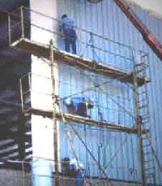
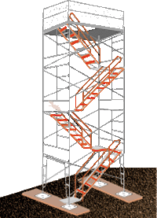

Scaffold Access

|
Climbing
the structural cross-braces of a scaffold is unsafe, and
specifically forbidden by federal standards. However,
OSHA permits direct access from another scaffold, structure, or personnel
hoist.
If such access is not possible, portable ladders, hook-on ladders,
attachable ladders, stair towers, stairway-type ladders, ramps, walkways,
or built-in ladders must be used, under the following regulations:
|
 |
|
Portable,
Hook-on, and Attachable Ladders
- Must
be positioned so as not to tip the scaffold.
|
|
Hook-on
and Attachable Ladders
|
|
Stairway-type
Ladders
- Must
have their bottom step no more than 24 inches above the level
on which the scaffold is supported.
- Must
have rest platforms at 12-foot maximum intervals.
- Must
have a minimum step width of 16 inches, except that mobile stairway-type
ladders shall have a minimum step width of 11� inches.
- Must
have slip-resistant treads on all steps and landings.
|
|
Stair
Towers
- Must have their bottom step no more than 24 inches above the
level on which the scaffold is supported.
- Must have a stair-rail, consisting of a top-rail and a
mid-rail, on each side.
- The
top-rail of each stair-rail must also be capable of serving
as a handrail, unless a separate handrail is provided.
- Stair-rails
and handrails must be designed and constructed to prevent
punctures, lacerations, snagged clothing, and projection.
- Handrails,
and top-rails used as handrails, must be at least 3 inches
from other objects.
- Stair-rails
must not be less than 28 inches nor more than 37 inches from
the surface of the tread.
- Must
be at least 18 inches wide between stair-rails, and have a landing
platform at least 18 inches wide by at least 18 inches long at
each level.
- Must
have slip-resistant surfaces on all treads and landings.
- Must
be installed between 40 degrees and 60 degrees from the horizontal.
- Must
have uniform riser height, within � inch, for each flight of stairs,
except for the top and bottom steps of the entire system.
- Must
have uniform tread depth, within � inch, for each flight of stairs.
|
|
Built-in
Scaffold Ladders
- Must
be specifically designed and constructed for use as ladder rungs.
- Must
have a rung length of at least 8 inches.
- Must
not be used as work platforms when rungs are less than 11� inches,
unless each employee uses fall protection or a
positioning
device
- Must
be uniformly spaced within each frame section.
- Must
have rest platforms at 35-foot maximum intervals on all supported
scaffolds more than 35 feet high.
- Must
have a maximum space between rungs of 16� inches.
|
|
Steps
and rungs of ladders and stairways
must line up vertically with
each other between rest platforms.
|
|
Ramps
and Walkways
- Must
have guardrails which comply
with
1926
Subpart M if more than 6 feet above lower levels.
- Must
have a slope of no more than 1 vertical to 3 horizontal degrees
(20 degrees above the horizontal).
- Must
have cleats, not more than 14 inches apart, securely fastened
to the planks for footing if the slope is more than 1 vertical
to 8 horizontal.
|
|
Direct Access
- Direct access to or from another surface shall
only be used when the scaffold is not more than 14 inches horizontally
and 24 inches vertically from the other surface.
|
 |
|
|